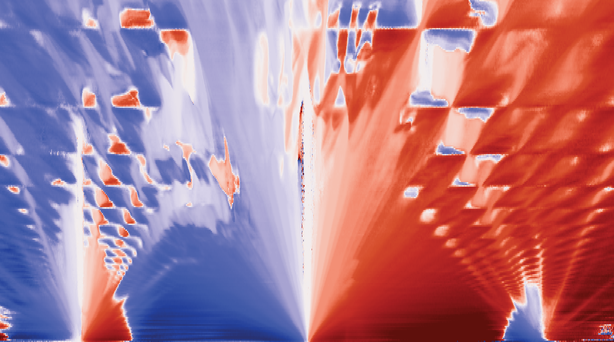

Designing 2D quantum materials
A twisted double bilayer graphene device
Superconductivity in twisted 2+2 graphene
Fraunhofer oscillations of critical current in a magnetic field

Topological states in graphene
Recursive energy spectra of electrons in a strong magnetic field
Probing electronic states
Quantum Transport at millikelvin temperatures
Fermiology of multilayer graphene
Quantum oscillations of resistivity measured in a graphene device

Lateral quantum dots
Defined on a GaAs/AlGaAs heterostructure